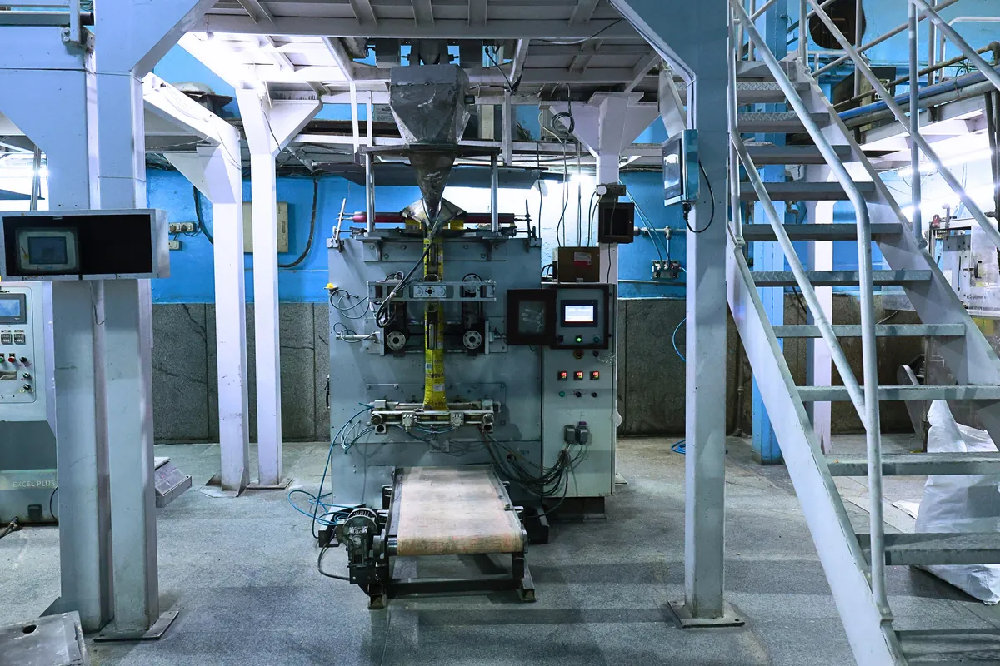
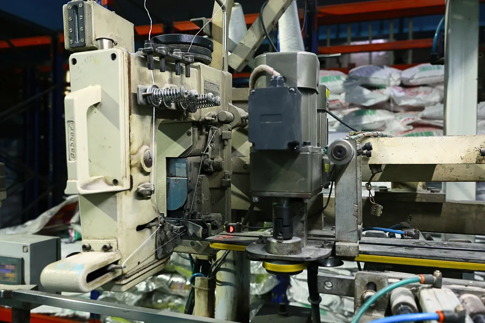
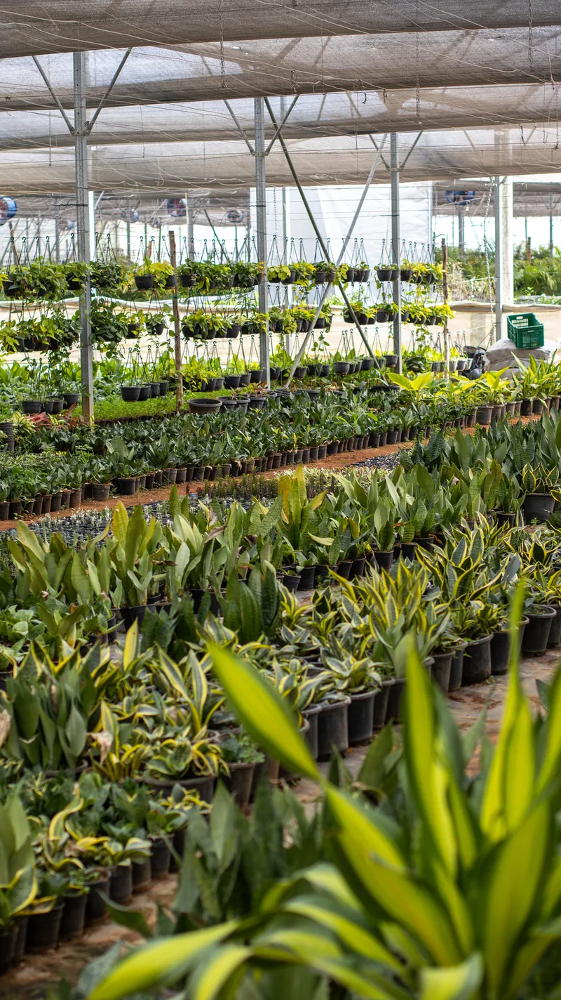

Cutting-edge quality labs
Managed by qualified, experienced food technologists.
Five decades of expertise, advanced technology and uncompromising quality controls — for Indian and global markets.

State-of-the-art food processing plants in Bengaluru, built for high-volume throughput, accuracy and scalability.



Managed by qualified, experienced food technologists.
Every lot checked before it enters processing.
Precision flour and moisture checks for batch consistency.
169,564 tonnes in FY20–21 to 259,072 in FY25–26. *Projections use an 8.85% CAGR and are forward-looking estimates.
Six stages, one integrated chain. Scroll through how a grain becomes a trusted pack.
Direct procurement from 8,000+ farmers with fair, transparent pricing.
Four GMP-certified plants in Bengaluru with Bühler & Sortex technology.
In-house labs for raw material, paddy, microbial & chemical testing.
Hygienic smart packing systems — from 100g packs to 50Kg bags.
A company-owned fleet of 100–150 cargo vehicles and 350+ distributors.
Reaching homes, professional kitchens, institutions and global markets.
Sustainability is embedded into how we source, process, move and grow food.


A place to experiment, learn and scale sustainable agricultural practices.
Automation and integrated systems reduce waste, optimise energy and minimise losses; an owned fleet cuts redundant transport.
Centralised manufacturing and controlled sourcing reduce emissions; future facilities target a lower environmental load per tonne.